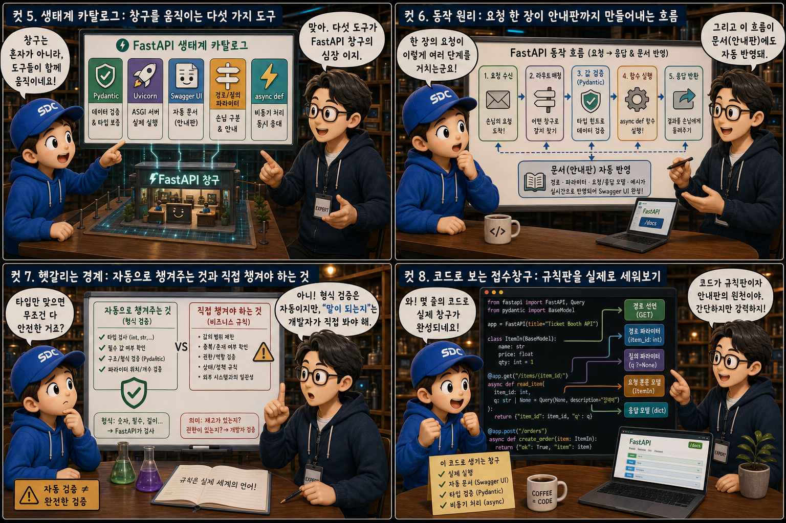
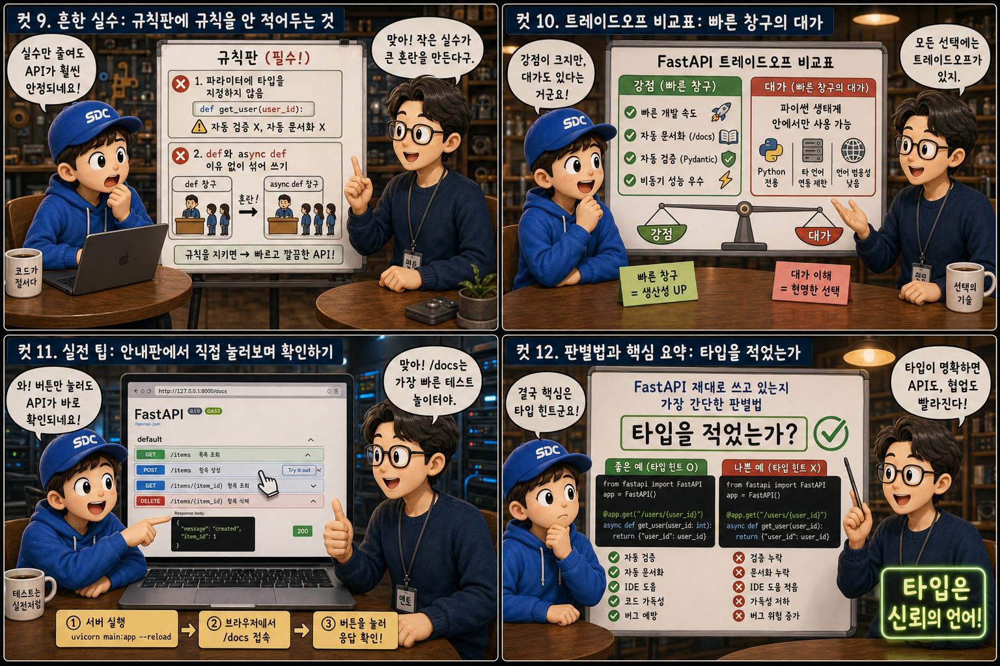

요청 규칙만 정하면 안내판까지 스스로 그려 붙이는 ‘접수창구’에 비유해, 파이썬 타입 힌트가 만들어내는 자동화를 12컷으로 풀어봅니다.
FastAPIvsFlask
API 서버를 만들 때 우리는 늘 두 가지 일을 따로 해왔습니다. 요청을 처리하는 코드를 짜는 일, 그리고 그 API를 어떻게 쓰면 되는지 설명하는 문서를 쓰는 일. FastAPI는 이 둘을 하나로 묶어버립니다. 함수 파라미터에 파이썬 타입 힌트를 붙이는 순간, 값 검증과 API 문서가 동시에 만들어지기 때문입니다. 손님의 요청 규칙(라우트)을 정하는 순간 그 규칙을 쓰는 방법을 설명하는 안내판까지 스르륵 인쇄해 붙여주는 접수창구 하나를 떠올리며, FastAPI가 어떻게 이런 자동화를 만들어내는지 12컷으로 살펴봅니다.
PART 1 / 3 — 정의와 비교 (컷 01–04)
fourcut-01 — 컷 01 ~ 04
컷 01
이 창구는 왜 요청만 해도 안내판까지 생길까
FastAPI는 요청 처리 규칙만 정하면, 그 규칙을 쓰는 방법을 설명하는 안내판까지 스스로 만들어주는 프레임워크다.
파이썬으로 API 서버, 즉 다른 프로그램이나 화면이 데이터를 요청하고 받아가는 창구를 만든다고 상상해 보세요. 틸/그린 간판이 붙은 작은 접수창구, 번호표 발권기 앞에 앉은 직원, 그리고 그 옆 벽에 스르륵 인쇄되어 나타나는 안내판. 창구의 규칙을 정하는 순간 그 규칙을 사용하는 방법을 설명하는 안내판까지 동시에 완성되는 이 장면이, 이 시리즈가 다루는 FastAPI의 정체입니다. FastAPI — build APIs fast
컷 02
정의부터 명확히: 규칙판 하나면 나머지는 창구가 알아서
FastAPI는 파이썬 타입 힌트로 요청과 응답의 모양을 선언하면, 값을 자동으로 검증하고 API 문서까지 자동으로 생성해주는 파이썬 웹 프레임워크다.
FastAPI는 함수의 파라미터에 파이썬 타입 힌트를 붙이는 것만으로 두 가지 일을 동시에 해줍니다. 들어온 값이 그 타입에 맞는지 자동으로 검사하고, 그 규칙을 근거로 API 문서를 자동으로 만들어줍니다. 창구 직원이 “이 서류는 이름과 나이가 필요합니다”라는 규칙판 하나만 벽에 붙이면, 손님용 안내판도 똑같은 내용으로 저절로 완성되는 것과 같습니다. 개발자는 규칙(타입)만 선언하면 되고, 검증과 문서화라는 반복 작업은 FastAPI가 대신 처리합니다. type hints -> validation + docs
컷 03
나란히 비교: 자동으로 붙는 안내판, 손으로 써야 하는 안내판
FastAPI는 타입 힌트만으로 자동 검증과 자동 문서화를 제공하지만, Flask는 더 자유로운 대신 검증과 문서화를 대부분 직접 챙겨야 한다.
왼쪽 틸/그린 창구에는 로봇 팔이 방금 인쇄된 안내판을 척척 벽에 붙이고 있고, 오른쪽 회색 창구에서는 직원이 펜을 눌러가며 안내판 문구를 직접 써 내려갑니다. FastAPI는 파이썬 타입 힌트를 선언하는 것만으로 요청 값 검증과 API 문서 생성을 자동으로 처리해주는, 자동화에 무게를 둔 프레임워크입니다. Flask는 더 오래되고 더 자유로운 프레임워크로, 원하는 대로 구조를 짤 수 있는 대신 값 검증이나 문서화 기능을 직접 라이브러리를 추가하고 설정해야 하는 경우가 많습니다. 둘 다 파이썬으로 API 서버를 만드는 도구지만, 자동화 정도라는 저울 위에서 서 있는 위치가 다릅니다. type hints -> auto validation + auto docs / more freedom, manual setup
컷 04
한 문장으로 정리하면
이 한 문장만 기억해도 FastAPI가 다른 프레임워크와 무엇이 다른지 설명할 수 있다.
YOU WRITE
타입 힌트를 규칙으로 선언한다
FASTAPI GIVES
자동 검증과 자동 문서화를 돌려준다
definition
FastAPI는 파이썬 타입 힌트를 규칙으로 삼아, 들어오는 데이터를 자동으로 검증하고 그 규칙 그대로 API 문서를 자동 생성해주는 현대적이고 빠른 웹 프레임워크입니다. 타입을 쓰면 검증과 문서화가 따라온다는 것, 그것이 FastAPI의 핵심입니다.
PART 2 / 3 — 생태계와 동작 원리 (컷 05–08)

fourcut-02 — 컷 05 ~ 08
컷 05
생태계 카탈로그: 창구를 움직이는 다섯 가지 도구
FastAPI 창구는 혼자 움직이지 않는다. 검증, 실행, 문서화, 구분, 동시 처리를 각각 맡은 다섯 도구가 함께 움직인다.
Pydantic은 들어온 데이터가 정해진 모양(타입)과 맞는지 검사해주는 도구로, FastAPI의 자동 검증은 사실 Pydantic이 담당합니다. Uvicorn은 우리가 작성한 FastAPI 코드를 실제로 인터넷에서 응답할 수 있는 서버로 켜주는 실행기입니다. /docs 주소에서 볼 수 있는 Swagger UI는 우리가 정의한 라우트를 바탕으로 자동 생성되는 안내판이고, path parameter(주소 경로에 담긴 값)와 query parameter(주소 뒤 ?에 붙는 값)는 손님이 어떤 요청인지 구분하는 방법입니다. async def는 하나의 요청이 데이터베이스나 외부 응답을 기다리는 동안 다른 요청도 함께 처리할 수 있게 해주는, 창구 직원의 멀티태스킹 능력입니다. 이 다섯이 모여야 비로소 창구 하나가 완성됩니다.
컷 06
동작 원리: 요청 한 장이 안내판까지 만들어내는 흐름
사용자 요청→라우트 매칭→값 검증(Pydantic)→함수 실행→JSON 응답→/docs 자동 갱신
손님(클라이언트)이 특정 주소로 요청을 보내면, FastAPI는 먼저 그 주소와 일치하는 라우트(창구 규칙)를 찾습니다. 그다음 함수에 선언된 타입 힌트를 기준으로 Pydantic이 값을 검증하고, 형식이 맞지 않으면 곧바로 오류를 돌려줍니다. 값이 맞으면 우리가 작성한 함수가 실행되어 결과를 JSON 형태로 응답하고, 이 모든 규칙 정의는 동시에 /docs 안내판에도 자동으로 반영됩니다. 하나의 요청을 처리하는 이 흐름 자체가 안내판을 최신 상태로 유지하는 과정이기도 합니다.
컷 07
헷갈리는 경계: 자동으로 챙겨주는 것과 직접 챙겨야 하는 것
형식이 맞는지는 자동으로 검사해도, “이 값이 실제로 말이 되는지”의 비즈니스 규칙은 여전히 개발자가 직접 검증해야 한다.
창구 카운터를 가로지르는 반투명한 경계선을 상상해 보세요. 경계선 왼쪽에서는 도장 찍는 검수 담당자가 서류의 형식 — 글자 수, 숫자 여부, 필수 항목 — 만 확인합니다. FastAPI(정확히는 그 안의 Pydantic)가 자동으로 확인해주는 영역입니다. 경계선 오른쪽에서는 안경을 쓴 다른 직원이 “이미 사용 중인 이메일인지”, “재고가 남아있는지” 같은 서류의 실제 의미를 다시 읽습니다. 이건 타입 힌트만으로는 확인할 수 없고, 함수 안에서 개발자가 직접 로직을 작성해 검사해야 하는 영역입니다. FastAPI가 챙겨주는 자동 검증을 과신해서 이 경계를 잊으면, 형식은 멀쩡한데 실제로는 말이 안 되는 데이터가 그대로 통과할 수 있습니다. type check != business rule
# 요청 본문의 모양을 선언한다class Order(BaseModel):
name: str
price: float# 터미널에서 창구를 실제로 켠다# uvicorn main:app --reload
@app.get("/items/{item_id}")처럼 경로와 함께 함수를 선언하고, 파라미터에 item_id: int 같은 타입 힌트를 붙이면 그것만으로 주소에 담긴 값이 자동으로 정수로 변환되고 검증됩니다. 요청 본문처럼 더 복잡한 데이터는 Pydantic의 BaseModel을 상속한 클래스로 모양을 선언해두면, FastAPI가 그 모양대로 값을 검사해줍니다. 이렇게 작성한 코드를 uvicorn main:app --reload 명령으로 실행하면 실제로 작동하는 API 서버와 그 서버의 안내판(/docs)이 동시에 생겨납니다.
PART 3 / 3 — 실전 감각과 요약 (컷 09–12)

fourcut-03 — 컷 09 ~ 12
컷 09
흔한 실수: 규칙판에 규칙을 안 적어두는 것
⚠ no type hint = no auto validation, no docs
함수 파라미터에 item_id: int처럼 타입을 적지 않고 그냥 item_id라고만 쓰면, FastAPI는 그 값이 무엇인지 알 수 없어 자동 검증도 자동 문서화도 제대로 이루어지지 않습니다. 안내판도 “아무 값이나 가능”이라는 흐릿한 문구만 남을 뿐입니다.
✓ always annotate parameters with types
타입 힌트는 단순한 주석이 아니라 FastAPI가 규칙을 읽어내는 유일한 근거이므로, 반드시 명시해주는 습관이 필요합니다.
또한 def와 async def를 특별한 이유 없이 뒤섞어 쓰면, 시간이 걸리는 작업(외부 API 호출, DB 조회 등)을 처리할 때 창구 전체가 불필요하게 오래 기다리게 되는 경우가 생길 수 있습니다. 창구 두 개가 나란히 있는데 직원이 순서를 헷갈려 손님 줄이 뒤엉키는 모습과 같습니다. 각각의 쓰임을 이해하고 일관되게 사용하는 것이 좋습니다.
컷 10
트레이드오프 비교표: 빠른 창구의 대가
FastAPI는 빠른 개발 속도와 자동 문서화·검증이라는 강점을 주지만, 그 대가로 파이썬 생태계 안에서만 쓸 수 있다는 제약을 갖는다.
fast to build, python-only
비교 축
얻는 것
치르는 것
개발 속도
타입만 선언하면 검증·문서화가 즉시 따라옴
파이썬 타입 힌트 문법을 익혀야 함
문서화
‘/docs’ 안내판이 자동으로 인쇄됨
문서가 코드와 항상 정확히 일치해야 함
검증
Pydantic이 값 형식을 자동 확인
타입 힌트를 꼼꼼히 써야 하는 수고
실행 환경
파이썬 생태계 안에서 빠르게 통합
다른 언어 생태계와는 직접 연결 어려움
FastAPI는 타입 힌트만 선언해도 검증과 문서화가 자동으로 따라오기 때문에, API 서버를 매우 빠르게 만들고 다른 팀과의 협업(문서 공유)도 수월해집니다. 다만 이런 자동화는 파이썬 문법과 타입 힌트 작성 습관을 어느 정도 익혀야 제대로 누릴 수 있고, FastAPI 자체가 파이썬 생태계 안에서만 동작하므로 다른 언어로 짜인 시스템과 바로 통합하려면 별도의 연결 작업이 필요합니다. 빠른 개발 속도와 자동화라는 강점은, 파이썬이라는 하나의 생태계 안에 머무른다는 제약과 맞바꾼 결과입니다.
컷 11
실전 팁: 안내판에서 직접 눌러보며 확인하기
🖥 터미널에서 창구 켜기
uvicorn main:app --reload 실행
정상 기동 로그 확인
코드 저장 시 자동 재시작(reload) 확인
📋 /docs 안내판에서 바로 테스트
브라우저에서 /docs 접속
Try it out 클릭 후 값 입력
Execute 눌러 200 OK 응답 확인
FastAPI 서버를 uvicorn main:app --reload로 실행한 뒤 브라우저에서 /docs 주소로 들어가면, 별도의 도구 없이도 지금까지 정의한 모든 API 항목을 눈으로 보고 바로 테스트해볼 수 있는 안내판이 열립니다. 각 항목의 ‘Try it out’ 버튼을 누르고 값을 입력한 뒤 ‘Execute’를 누르면, 실제 서버에 요청이 전송되고 그 응답을 그 자리에서 확인할 수 있어 Postman 같은 별도 프로그램 없이도 빠르게 디버깅할 수 있습니다. 코드를 고치고 새로고침만 하면 되는 매우 짧은 개발 확인 주기를 만들어줍니다.
컷 12
판별법과 핵심 요약: 타입을 적었는가
함수에 타입 힌트를 적었는가, 그것이 FastAPI를 제대로 쓰고 있는지 가늠하는 가장 간단한 판별법이다.
FastAPI를 제대로 쓰고 있는지 가늠하는 가장 간단한 판별법은 ‘함수 파라미터마다 타입 힌트를 적었는가’입니다. 타입을 적으면 그 즉시 값 검증과 API 문서 생성이라는 두 가지 혜택이 자동으로 따라오고, 적지 않으면 그 혜택을 스스로 포기하는 셈이 됩니다. 접수창구가 규칙판 하나만 붙이면 안내판까지 저절로 완성되듯, FastAPI는 개발자가 선언한 타입이라는 규칙을 근거로 검증과 문서화, 그리고 빠른 개발이라는 세 가지를 동시에 선물합니다.
타입 힌트가 곧 규칙이다Pydantic이 값을 검증한다/docs가 안내판이다async def는 기다림을 나눠 쓴다Flask보다 자동화에 무게판별법: 타입을 적었는가
하나의 접수창구, 두 가지 선물
타입 힌트라는 규칙판 하나를 세우면, FastAPI는 그 규칙대로 값을 검증하고 그 규칙대로 안내판(문서)까지 그려 붙여줍니다. 손님이 요청하는 방식은 하나지만, 창구가 돌려주는 선물은 검증과 문서화, 두 가지입니다.